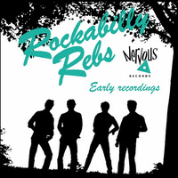

Rockabilly Rebs - Early Recordings (MiniAlbum, 2010)
01 - Boot Hill Boogie (2:11)
02 - Nothin' Shakin' (2:57)
03 - One Way Train (1:46)
04 - Alabama Shake (2:06)
05 - Boppin' Bullfrog (2:26)
06 - Rag Bones (2:02)
© Nervous Records :: [Digital]
Notes
United Kingdom, England, Leeds.
Songs that appeared on two vinyl releases (single / EP) of 80's (1979-1982).
Band for the vinyl LP release "Rebels Till The End" from 1982:
Graham Kearns - Bass
Paul 'Poppa' Harrison - Drums
Dean Scholey - Guitar
Gary Strain - Vocals
All tracks were labeled by 'Vinyl dub'. I list the fifth and sixth tracks here based on the actual sound of the song.
reference information: Discogs®
Review
014/366 (Project 366)
Rockabilly Rebs made a tasty Teddy Boy Rock'N'Roll with classy Rockabilly sound. Tracklist order is good, starting from one mood smoothly switches to another. Rockin' waves, enchanting vocal, shaking rhythm, hillbilly beat and winding up boogie melody. If it is time to bop... well, these recordings are good choice. Is it possible sit (or stay) quietly when this amazing tune sounds?! Stylish and clear.
In addition, vinyl sound is highly atmospheric. As a result, all tracks sounds with a nifty motive and are perceived with special feelings. These tracks, of course, are not ideally polished; but their sound with only wanting to relish them more and more. Perhaps the sound with many things that I really like in UK Rockabilly. Shifting from one tone to another is so pretty. I think that the instrumental accompaniment of these songs perfectly matched (just as example, "Nothin' shakin'") into the Rockabilly Rebs band name.
Fifteen minutes of real smiling feelings. Especially I want to point out "Boppin' Bullfrog" and "One Way Train". Both tracks are different, but these songs leads to real enjoy and shows the best of the band. However, all tracks are nice. With energetic youth enthusiasm, with the desire to play cool and sound chicly! Gurgling guitars for the first three tracks are pretty. And these records are, by the by, in quite one mood. Not a crazy or wild, but a bit teddy. The fourth track is a good duct between previous mood and the remaining part. And it turned out to be a fine shake-up. Since the fifth track and the sixth "Rag Bones" track with its own wave. More rhythmic and boppin', funny and quirky sound.
Rockabilly Revival sound with influence of many rockin' and rollin' moods. Even a bit (neo)Hillbilly. Very good and pleasant sound with slightly vintage sensations. Fifties? Eighties? It does not matter. Sounds just okay.